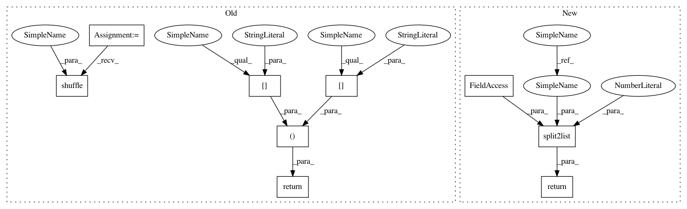

2eccd7ded601d1bc777651fe9b5494ac3ccc7be9,datasets/KITTI.py,,make_dataset,#,20
Before Change
images.append([[img1,img2],flow_map])
assert(len(images) > 0)
random.shuffle(images)
split_index = math.floor(len(images)*split/100)
assert(split_index >= 0 and split_index <= len(images))
return (images[:split_index], images[split_index+1:]) if split_index < len(images) else (images, [])
def KITTI_loader(root,path_imgs, path_flo):
imgs = [os.path.join(root,path) for path in path_imgs]
flo = os.path.join(root,path_flo)
After Change
img_dir = "image_2"
assert(os.path.isdir(os.path.join(dir,img_dir)))
images = []
for flow_map in glob.iglob(os.path.join(dir,flow_dir,"*.png")):
flow_map = os.path.basename(flow_map)
root_filename = flow_map[:-7]
flow_map = os.path.join(flow_dir,flow_map)
img1 = os.path.join(img_dir,root_filename+"_10.png")
img2 = os.path.join(img_dir,root_filename+"_11.png")
if not (os.path.isfile(os.path.join(dir,img1)) or os.path.isfile(os.path.join(dir,img2))):
continue
images.append([[img1,img2],flow_map])
return split2list(images, split, default_split=0.9)
def KITTI_loader(root,path_imgs, path_flo):
imgs = [os.path.join(root,path) for path in path_imgs]
flo = os.path.join(root,path_flo)
In pattern: SUPERPATTERN
Frequency: 3
Non-data size: 9
Instances
Project Name: ClementPinard/FlowNetPytorch
Commit Name: 2eccd7ded601d1bc777651fe9b5494ac3ccc7be9
Time: 2017-11-16
Author: simon.fauchard@parrot.com
File Name: datasets/KITTI.py
Class Name:
Method Name: make_dataset
Project Name: ClementPinard/FlowNetPytorch
Commit Name: 2eccd7ded601d1bc777651fe9b5494ac3ccc7be9
Time: 2017-11-16
Author: simon.fauchard@parrot.com
File Name: datasets/mpisintel.py
Class Name:
Method Name: make_dataset
Project Name: ClementPinard/FlowNetPytorch
Commit Name: 2eccd7ded601d1bc777651fe9b5494ac3ccc7be9
Time: 2017-11-16
Author: simon.fauchard@parrot.com
File Name: datasets/flyingchairs.py
Class Name:
Method Name: make_dataset
Project Name: ClementPinard/FlowNetPytorch
Commit Name: 2eccd7ded601d1bc777651fe9b5494ac3ccc7be9
Time: 2017-11-16
Author: simon.fauchard@parrot.com
File Name: datasets/KITTI.py
Class Name:
Method Name: make_dataset